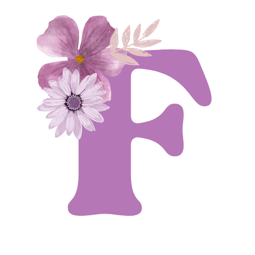

<mat-toolbar>
  <button mat-icon-button class="example-icon" aria-label="Example icon-button with menu icon">
    <mat-icon>menu</mat-icon>
  </button>
  
  <span>Floure Accesorios</span>
  <!-- Botón para la vista de Inicio -->
  <button mat-button routerLink="/inicio">Inicio</button>

  <button mat-button [matMenuTriggerFor]="producto">Productos</button>
  <mat-menu #producto="matMenu">
      <button mat-menu-item routerLink="/aros">Aros</button>
      <button mat-menu-item routerLink="/collares">Collares</button>
      <button mat-menu-item routerLink="/carteras">Carteras</button>
      <button mat-menu-item routerLink="/relojes">Relojes</button>
      <button mat-menu-item routerLink="/pulseras">Pulseras</button>
  </mat-menu>

  <span class="example-spacer"></span>

  
  

  <!-- Inicio de sesión y el Registro de un nuevo usuario -->
  <button mat-icon-button [matMenuTriggerFor]="usuario"><mat-icon>person</mat-icon></button>
  <mat-menu #usuario="matMenu">
      <button mat-menu-item routerLink="/registro">Registrarse</button>
      <button mat-menu-item routerLink="/inicio-sesion">Iniciar Sesión</button>
  </mat-menu>

  <!-- Carrito -->
  <button mat-icon-button class="example-icon favorite-icon" aria-label="Example icon-button with heart icon">
    <mat-icon>shopping_cart</mat-icon>
  </button>
</mat-toolbar>